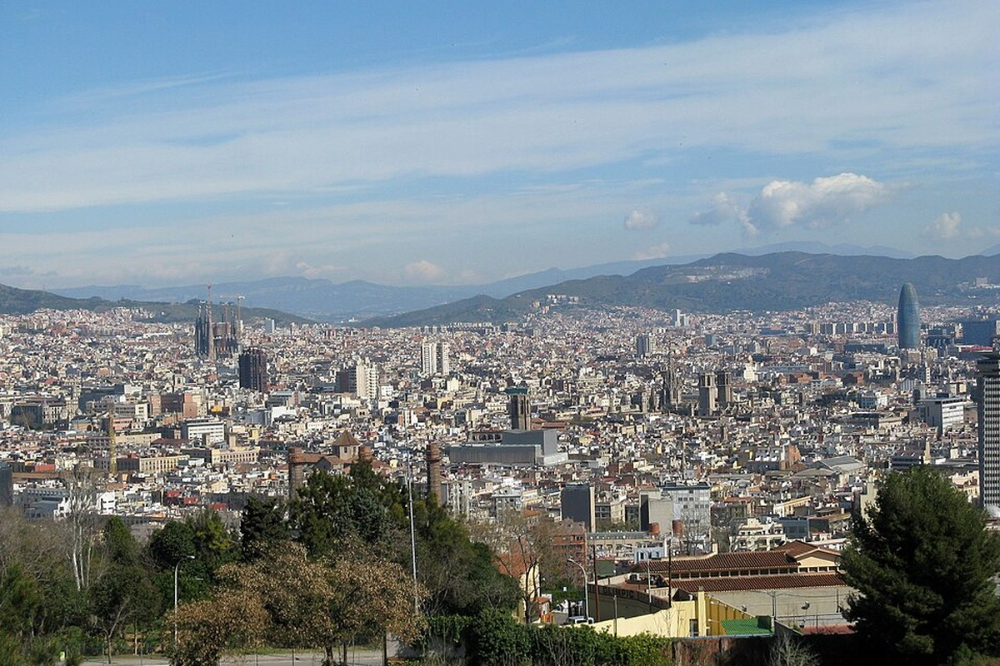
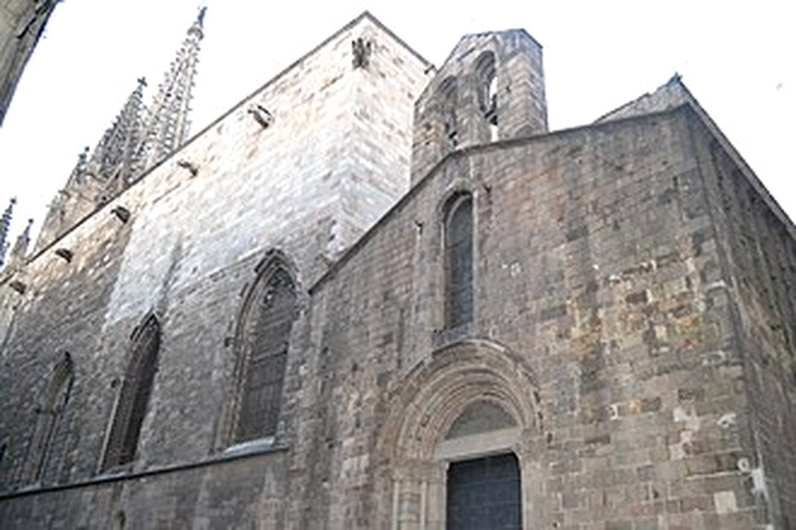

강변→구시가지→대성당→성벽 순서가 자연스럽다.




Girona 당일치기
후회 없는 여행을 기준으로 가이드·커플·현지인의 관점을 합의한 일정.
예상 도보116분
대중교통100분
택시·차량0분
일정 지점12곳
반드시 참고: Barcelona Sants–Girona 고속열차 왕복 시간 지정. Regional과 혼동하지 않기.
컬러하우스와 돌계단이 바르셀로나와 다른 사진을 만든다.
고속열차를 지정 예약해야 이동 피로를 줄인다.
숙소 출발
Sants 이동
왜 중요한가숙소 출발은(는) 오늘의 흐름에서 다음 장면으로 자연스럽게 이어지는 핵심 지점이다.
볼 포인트Sants 이동. 대표 풍경과 공간의 분위기에 집중한다.
실전 팁혼잡하면 핵심을 보고 이동하고, 예약 장소는 15분 일찍 도착한다.
시간 관리표시된 이동시간에 환승·대기 10분을 더한다.
MetroUrgell Metro Barcelona → Barcelona Sants Station15분 · 경로 ↗
Barcelona Sants
열차 준비
왜 중요한가Barcelona Sants은(는) 오늘의 흐름에서 다음 장면으로 자연스럽게 이어지는 핵심 지점이다.
볼 포인트열차 준비. 대표 풍경과 공간의 분위기에 집중한다.
실전 팁혼잡하면 핵심을 보고 이동하고, 예약 장소는 15분 일찍 도착한다.
시간 관리표시된 이동시간에 환승·대기 10분을 더한다.
고속열차Barcelona Sants Station → Girona Train Station40분 · 경로 ↗
Girona행 고속열차
지정 좌석
왜 중요한가Girona행 고속열차은(는) 오늘의 흐름에서 다음 장면으로 자연스럽게 이어지는 핵심 지점이다.
볼 포인트지정 좌석. 대표 풍경과 공간의 분위기에 집중한다.
실전 팁혼잡하면 핵심을 보고 이동하고, 예약 장소는 15분 일찍 도착한다.
시간 관리표시된 이동시간에 환승·대기 10분을 더한다.
도보Girona Train Station → Pont de les Peixateries Velles Girona15분 · 경로 ↗
Pont de les Peixateries Velles
Onyar 컬러하우스
왜 중요한가Pont de les Peixateries Velles은(는) 오늘의 흐름에서 다음 장면으로 자연스럽게 이어지는 핵심 지점이다.
볼 포인트Onyar 컬러하우스. 대표 풍경과 공간의 분위기에 집중한다.
실전 팁혼잡하면 핵심을 보고 이동하고, 예약 장소는 15분 일찍 도착한다.
시간 관리표시된 이동시간에 환승·대기 10분을 더한다.
도보Pont de les Peixateries Velles Girona → Girona Old Town10분 · 경로 ↗
Girona Old Town
구시가지
왜 중요한가Girona Old Town은(는) 오늘의 흐름에서 다음 장면으로 자연스럽게 이어지는 핵심 지점이다.
볼 포인트구시가지. 대표 풍경과 공간의 분위기에 집중한다.
실전 팁혼잡하면 핵심을 보고 이동하고, 예약 장소는 15분 일찍 도착한다.
시간 관리표시된 이동시간에 환승·대기 10분을 더한다.
도보Girona Old Town → Girona Cathedral12분 · 경로 ↗
Girona Cathedral
대성당·계단
왜 중요한가Girona Cathedral은(는) 오늘의 흐름에서 다음 장면으로 자연스럽게 이어지는 핵심 지점이다.
볼 포인트대성당·계단. 대표 풍경과 공간의 분위기에 집중한다.
실전 팁혼잡하면 핵심을 보고 이동하고, 예약 장소는 15분 일찍 도착한다.
시간 관리표시된 이동시간에 환승·대기 10분을 더한다.
도보Girona Cathedral → Girona Old Town Restaurants8분 · 경로 ↗
구시가지 점심
점심
왜 중요한가구시가지 점심은(는) 오늘의 흐름에서 다음 장면으로 자연스럽게 이어지는 핵심 지점이다.
볼 포인트점심. 대표 풍경과 공간의 분위기에 집중한다.
실전 팁혼잡하면 핵심을 보고 이동하고, 예약 장소는 15분 일찍 도착한다.
시간 관리표시된 이동시간에 환승·대기 10분을 더한다.
도보Girona Old Town Restaurants → Passeig de la Muralla Girona15분 · 경로 ↗
Passeig de la Muralla
성벽 산책
왜 중요한가Passeig de la Muralla은(는) 오늘의 흐름에서 다음 장면으로 자연스럽게 이어지는 핵심 지점이다.
볼 포인트성벽 산책. 대표 풍경과 공간의 분위기에 집중한다.
실전 팁혼잡하면 핵심을 보고 이동하고, 예약 장소는 15분 일찍 도착한다.
시간 관리표시된 이동시간에 환승·대기 10분을 더한다.
도보Passeig de la Muralla Girona → Onyar River Girona20분 · 경로 ↗
Onyar 강변 카페
사진·휴식
왜 중요한가Onyar 강변 카페은(는) 오늘의 흐름에서 다음 장면으로 자연스럽게 이어지는 핵심 지점이다.
볼 포인트사진·휴식. 대표 풍경과 공간의 분위기에 집중한다.
실전 팁혼잡하면 핵심을 보고 이동하고, 예약 장소는 15분 일찍 도착한다.
시간 관리표시된 이동시간에 환승·대기 10분을 더한다.
도보Onyar River Girona → Girona Train Station18분 · 경로 ↗
Girona Station
귀환
왜 중요한가Girona Station은(는) 오늘의 흐름에서 다음 장면으로 자연스럽게 이어지는 핵심 지점이다.
볼 포인트귀환. 대표 풍경과 공간의 분위기에 집중한다.
실전 팁혼잡하면 핵심을 보고 이동하고, 예약 장소는 15분 일찍 도착한다.
시간 관리표시된 이동시간에 환승·대기 10분을 더한다.
고속열차Girona Train Station → Barcelona Sants Station40분 · 경로 ↗
Barcelona Sants
도착
왜 중요한가Barcelona Sants은(는) 오늘의 흐름에서 다음 장면으로 자연스럽게 이어지는 핵심 지점이다.
볼 포인트도착. 대표 풍경과 공간의 분위기에 집중한다.
실전 팁혼잡하면 핵심을 보고 이동하고, 예약 장소는 15분 일찍 도착한다.
시간 관리표시된 이동시간에 환승·대기 10분을 더한다.
MetroBarcelona Sants Station → Urgell Metro Barcelona15분 · 경로 ↗
숙소 복귀
저녁·휴식
왜 중요한가숙소 복귀은(는) 오늘의 흐름에서 다음 장면으로 자연스럽게 이어지는 핵심 지점이다.
볼 포인트저녁·휴식. 대표 풍경과 공간의 분위기에 집중한다.
실전 팁혼잡하면 핵심을 보고 이동하고, 예약 장소는 15분 일찍 도착한다.
시간 관리표시된 이동시간에 환승·대기 10분을 더한다.
오늘의 후회 방지 가이드
빨간 철교에서 컬러하우스를 보고, 대성당의 넓은 본당과 90개 계단을 경험한다. 성벽은 그늘이 적어 물이 필요하다.